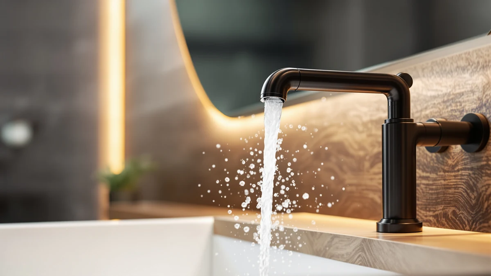

Best How to Clean Bathroom Faucet (2026) | Best Bathroom Faucets
Prices and picks verified as of August 2026. Independent, reader-supported reviews.


Things to Know Before You Buy
- Your finish decides your cleaner. Chrome and stainless steel shrug off vinegar, while oil-rubbed bronze and matte black can discolor from it. Check the care guide before you soak anything.
- Soap and vinegar do different jobs. Dish soap lifts grease, toothpaste splatter, and skin oils. Vinegar dissolves the chalky mineral deposits that soap cannot touch.
- The aerator causes most flow problems. A weak or sputtering stream from a bathroom faucet usually traces back to a clogged screen at the spout tip, not to the valve or your water pressure.
- Drying is half the job. Water spots form when droplets evaporate on the finish, so a 30-second buff with a dry cloth after each cleaning keeps the faucet looking new far longer.
Figuring out how to clean bathroom faucet buildup takes 45 minutes, a bottle of white vinegar, and supplies you already keep under the sink. Hard water leaves chalky white deposits around the spout and handles, soap scum dulls the shine, and the aerator screen inside the spout tip clogs a little more each month until the stream sputters. None of that requires special products or a plumber.
The full job breaks down into a soap wash for everyday grime, a vinegar wrap for mineral spots, an aerator soak to restore the flow, and a final buff that keeps water spots from coming back. One warning before you start: the fastest way to ruin a brushed nickel or matte black faucet is to scrub it with the wrong cleaner, so match the treatment to your finish and test vinegar on a hidden spot first.
What You'll Need
- Supplies: white vinegar, dish soap, baking soda
- Tools: two microfiber cloths, a soft-bristle toothbrush for the bathroom faucet's seams and aerator screen
Step 1: Clear the sink and mix a soap solution
Move the soap dispenser, toothbrush cup, and anything else off the sink deck so you can reach every side of the bathroom faucet, including the back of the spout where grime hides. Fill a bowl with warm water and add two or three drops of dish soap. That mild mix cleans most of what sits on a faucet: skin oils, toothpaste splatter, and the film hand soap leaves behind.
Resist the urge to grab a stronger product. Bleach, ammonia sprays, and scouring powders etch or dull most faucet finishes, and the damage does not polish out. Brushed nickel, chrome, and matte black each ship with care instructions for a reason, and nearly all of them open with the same advice: mild soap and a soft cloth.
Step 2: Wash the faucet body and handles
Dip a microfiber cloth in the soapy water, wring it out, and wipe the entire faucet from the spout tip down to the base. Work the cloth around the handles and along the underside of the spout, the two areas most people skip and the two areas that collect the most gunk. On a bathroom faucet with a base plate, run the cloth along the seam where the plate meets the counter.
A soft-bristle toothbrush handles what the cloth cannot. Scrub the seams around the handle bases, the joint where the spout swivels, and the drain ring if your faucet came with a matching pop-up. Grime in these crevices darkens and turns greasy over time, and a 30-second scrub lifts it before it hardens into a deposit you have to chip at.
Step 3: Wrap the spout in a vinegar-soaked cloth
Soak a cloth or a few paper towels in undiluted white vinegar, then wrap them around the spout, the handle bases, and any spot with white, chalky buildup. Press the cloth so it makes full contact and leave it for 15 to 20 minutes. The acetic acid dissolves the calcium and lime that hard water deposits on a bathroom faucet every time a droplet dries in place.
Check your finish before you commit to the full soak. Chrome, stainless steel, and brushed nickel handle vinegar well. Oil-rubbed bronze, matte black, and gold-toned finishes can stain or lighten, so for those, dilute the vinegar 50/50 with water and cut the contact time to five minutes. When the time is up, scrub the loosened deposits with the toothbrush and wipe the residue away.
Step 4: Remove and soak the aerator
The aerator is the small screened cap at the tip of the spout, and it collects mineral deposits faster than any other part of a bathroom faucet. Unscrew it counterclockwise by hand. If it refuses to budge, wrap it in a rag and use pliers with light pressure, since bare metal jaws chew up the finish in one squeeze.
Drop the aerator and its parts into a cup of white vinegar and let them soak for 15 minutes while the spout wrap from step 3 does its work. Scrub the screen with the toothbrush, push out any grit lodged in the mesh, and rinse everything under running water. A paste of baking soda and water scours off the deposits the vinegar softened but could not dissolve.
Thread the aerator back on hand-tight and run the water for a few seconds. A full, even stream means the screen is clear. If the stream still sputters or pulls sideways, grit is lodged in the mesh, so soak it again.
Step 5: Rinse, dry, and buff the finish
Wipe the whole bathroom faucet with a cloth dampened in clean water to remove soap film and vinegar residue. Leftover vinegar keeps working on the finish long after you stop, which matters little on chrome and adds up on bronze, so rinse more carefully than feels necessary.
Dry every surface with your second microfiber cloth, then buff with short, light strokes until the metal reflects evenly. Drying separates a faucet that looks professionally cleaned from one that looks wiped down, because a water spot is a droplet that evaporated in place. Make the 30-second buff a habit after each cleaning and the deep clean you finished today will hold for months.
Common Mistakes to Avoid
The most expensive mistake is reaching for abrasives. Scouring powder, magic erasers, and steel wool take the shine off a bathroom faucet in a single session, and no amount of polishing brings back a finish once you scratch through the coating. The chemical version of this mistake costs the same: bleach and ammonia-based glass sprays pit chrome and strip the coating off oil-rubbed bronze. Mild dish soap costs less and works on every finish sold.
Leaving vinegar on too long ranks next. A 20-minute wrap dissolves limescale on chrome, but the same wrap left for two hours, or applied weekly to a matte black faucet, etches and lightens the surface. Set a timer, and dilute the vinegar for any finish other than chrome, stainless steel, or brushed nickel.
Two smaller errors cost you the results. Skipping the aerator means the faucet looks clean while the stream keeps sputtering, since the screen holds the grit that causes flow problems. And walking away from a wet faucet undoes the final step: droplets dry into the same mineral spots you spent 45 minutes removing. Rinse, dry with a fresh cloth, and the cleaning holds.
Our Top Picks
No cleaning method rescues a faucet with a pitted, flaking, or corroded finish. If yours has reached that stage, these three picks from our roundups wipe clean fast and resist the water spots that make bathroom faucet cleaning a weekly chore.

Editor's Pick
NOHALIPY Stainless Steel Brushed Nickel
The stainless steel body and brushed nickel finish hide fingerprints and wipe clean in one pass with a damp microfiber cloth.
$45.99
Check Price on Amazon
Best Value
Delta Arvo Brushed Nickel Bathroom
Delta's brushed nickel finish masks water spots between cleanings, and the single-handle Arvo design leaves fewer seams for grime to settle into.
$150.38
Check Price on Amazon
Premium Choice
Delta Arvo 1 Hole Pull
The single-hole mount removes the base plate seam entirely, which means one less crevice to scrub during your monthly vinegar treatment.
$110.01
Check Price on AmazonWhat is the best thing to clean a bathroom faucet with?
Warm water with a few drops of dish soap handles daily grime, and plain white vinegar dissolves the mineral spots that soap leaves behind.
How do you remove hard water stains from a bathroom faucet?
Soak a cloth in white vinegar, wrap it around the stained areas, and leave it for 15 to 20 minutes.
Frequently Asked Questions
What is the best thing to clean a bathroom faucet with?
How do you remove hard water stains from a bathroom faucet?
Can vinegar damage a bathroom faucet finish?
How often should you clean a bathroom faucet?
How do you clean a bathroom faucet aerator without removing it?
Verdict
Knowing how to clean bathroom faucet buildup comes down to matching three cleaners to three problems: dish soap for grime, white vinegar for mineral deposits, and a baking soda paste for the crust the vinegar loosens but cannot dissolve. Budget 45 minutes for the full job, protect specialty finishes by diluting the vinegar, and pull the aerator instead of ignoring it, since the screen at the spout tip causes most flow complaints. The habit that pays off longest costs 30 seconds: dry and buff the faucet after each cleaning so water spots cannot form. Repeat the soap wipe weekly and the vinegar treatment monthly in hard water areas, and the finish will outlast the valve. And if your current fixture has corroded past saving, start fresh with the NOHALIPY stainless steel faucet from our picks above, a $45.99 upgrade whose brushed nickel finish makes every future cleaning shorter.